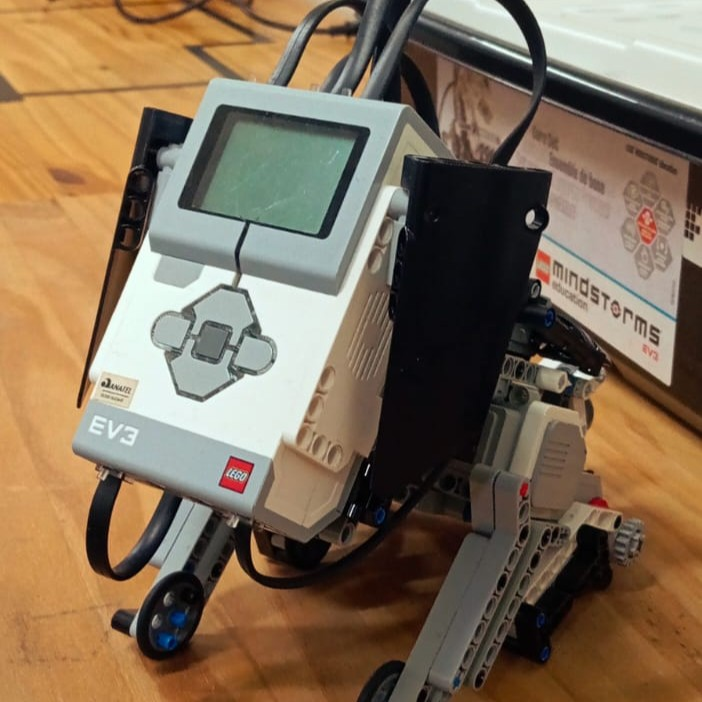
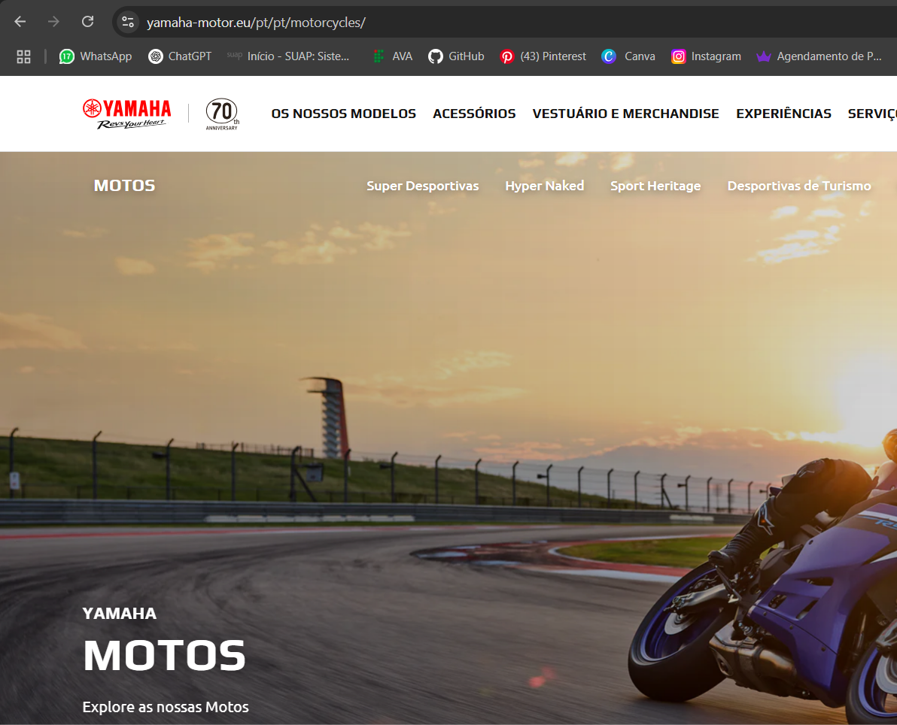
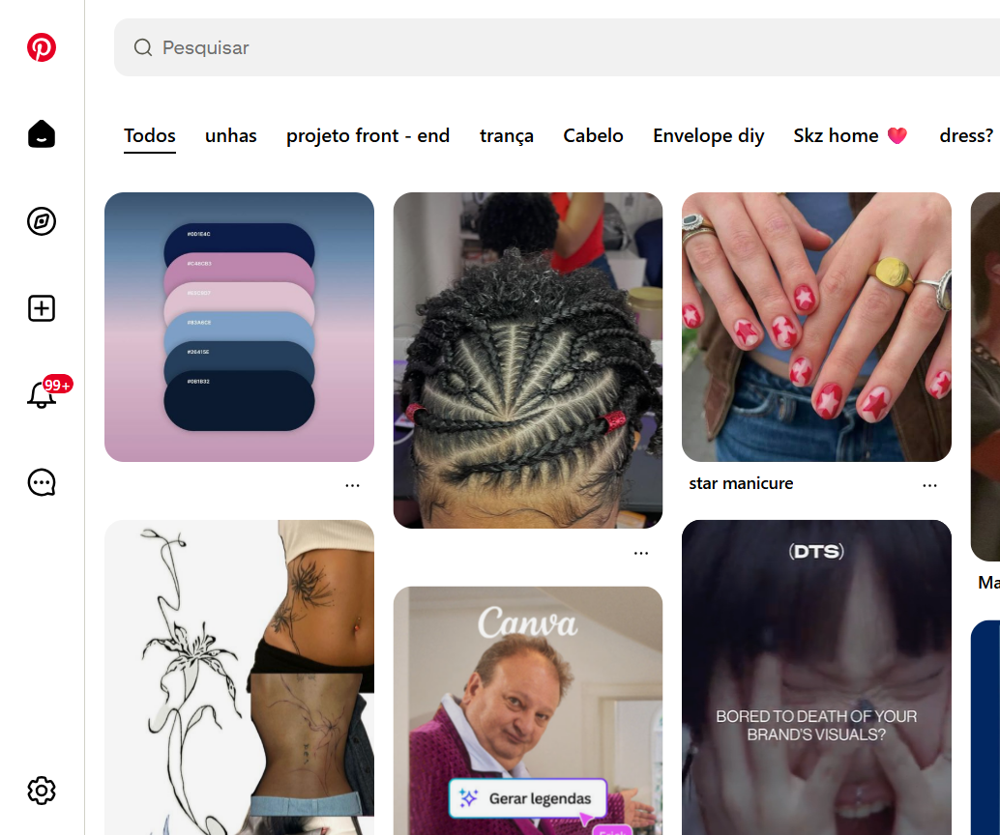

Casa dos Livros
Na disciplina de Fábrica de Software, o meu grupo está desenolvendo um site de compra e vanda de livros chamada: Casa dos Livros
Robótica
O projeto de robótica visa criar um robô autônomo inovador para assistência em ambientes industriais, aumentando a eficiência e a segurança com tecnologias avançadas e inteligência artificial.
Yamaha
A Yamaha, fundada por mim, Torakusu Yamaha, em 1887, é uma empresa japonesa que se tornou sinônimo de inovação e excelência em motocicletas, música e tecnologia, com uma história de mais de 130 anos de sucesso e uma reputação por produzir produtos de alta qualidade e desempenho.